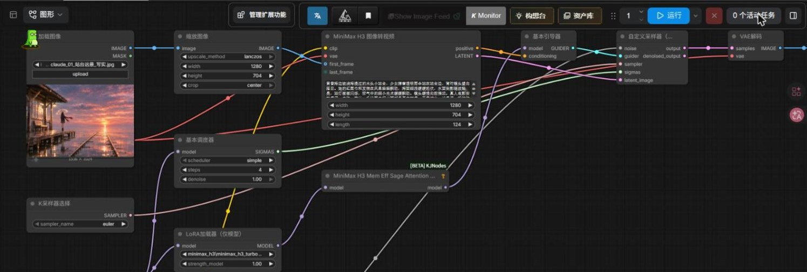
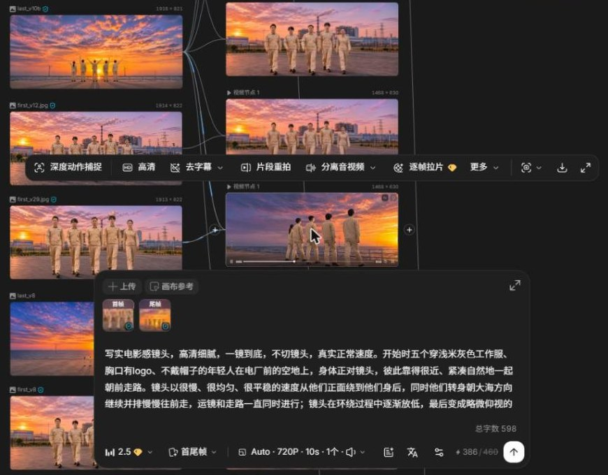

先出关键画面，再由图生成视频，逐条检查、审阅修改后剪进成片。
按脚本拆出需要 AI 生成的镜头，定好每个镜头的画面、动作和时长。序幕做水墨风，其余镜头写实。
为每个镜头生成首帧（需要时加尾帧），作为视频的起点和终点。人物需要像演员本人的镜头，参考演员照片做局部换脸修图。
用关键帧生成视频，按镜头难度选模型：
每条视频按秒抽帧拼图，检查动作是否连贯，有没有跳帧、闪烁、人物变脸。
合格的镜头放进预览网页在线审阅，按意见修改；定稿后剪进成片，在剪辑里调整速度和画面大小。


| 环节 | 模型 | 用途 |
|---|---|---|
| 出图 | GPT-Image-2（ChatGPT） | 关键帧、首尾帧、水墨风画面（后期主力） |
| 出图 | Qwen-Image / Qwen-Image-Edit 2509 | 文生图、改图（前期） |
| 视频 | MiniMax H3 + lightx2v 4 步加速 | 首帧 / 首尾帧图生视频，大部分镜头 |
| 视频 | 可灵 Kling 4.0（LibTV） | 多人、复杂动作镜头 |
| 视频 | Seedance 2.5（LibTV） | 五人环绕镜头最终版 |